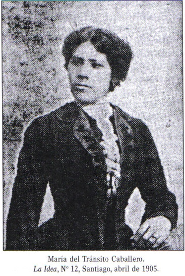
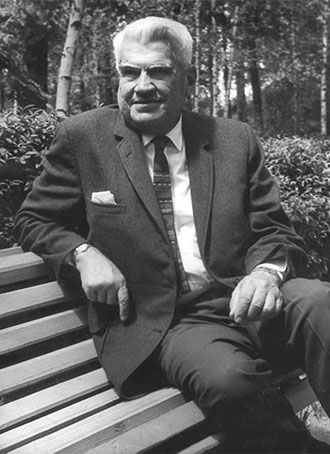

El rayado observado, presente en la Facultad de Medicina de la Universidad Diego Portales corresponde al dibujo de uno de los símbolos más reconocibles del anarquismo, la “A” circulada, en este caso encerrada en una bomba. Como es observable en éste y otros de los rayados encontrados al interior de campus de Santiago, el anarquismo como tendencia política parece ser muy atractivo para los universitarios capitalinos, pese a no haber grandes organizaciones anarquistas reconocibles a nivel regional, y mucho menos nacional. Sin embargo, Chile cuenta con grandes experiencias anarquistas históricas, especialmente durante la primera mitad del siglo pasado, pese a que estos sucesos no sean ampliamente considerados. A continuación, entonces, un pequeño listado que buscará establecer, de aquellos sucesos, algunos de los más importantes, así como identificando a algunas figuras influyentes afiliadas a grupos y movimientos anarquistas nacionales.

 Nacida en San Felipe, cuando tenía diez años se trasladó a Santiago en busca de trabajo. En la capital, se desarrolló como obrera textil en una fábrica de sombreros. Pese a que autores como Sergio Grez Tozo y Carlos Vicuña cuentan que habría trabajado durante una jornada de once horas, de ocho de la mañana a nueve de la noche, ocupada su tiempo libre en formarse de manera autodidacta leyendo a Kropotkin, Bakunin y Tólstoi. Su conocimiento de la “cuestión social” la llevó inicialmente a participar en la organización de kermesses en beneficio de las familias que sufrieron bajo el yugo del crudo invierno del año 1900. Más adelante, formó parte de la agrupación “Sociedad Artística”, de carácter anarquista, y escribía artículos bajo el seudónimo de Una sombrerera revolucionaria. El obrero mecánico y poeta Magno Espinoza escribió más tarde en su epitafio que María Caballero había participado durante la huelga tranviaria de 1902 dando primeros auxilios a los heridos luego de una embestida militar en contra de manifestantes pacíficos.
En 1915, a los veinticinco años y mientras se encontraba conflictuada debido a una enfermedad que la obligaba a decidir entre amputar su brazo derecho y morir, asistió al Teatro Lírico de Santiago a escuchar al Pope Julio. fraile renegado que daba un discurso anticlerical. En un derrumbe que dejó múltiples heridos, María Caballero perdió la vida.
Luego del fallecimiento de su marido, Ernesto Serrano (sindicado como el autor de un atentado explosivo contra la iglesia de Las Carmelitas Descalzas, en 1912), Hortensia Quinio vivió amparada por un grupo de camaradas anarquistas, editores del periódico La Batalla, entre ellos su pareja Voltaire Arganoña. Éste, pintor de brocha gorda y también asociado, como varios de sus compañeros, a la Sociedad de Resistencia de Oficios Varios, había sido apresado y liberado en múltiples ocasiones por su participación en actos de repudio de la Matanza de la escuela de Santa María de Iquique, distribución de panfletos políticos y altercados con la policía.
Ambos fueron detenidos y torturados luego de que en 1913 se allanara su domicilio (colindante con la Peluquería del Pueblo) ilegítimamente. Hortensia Quinio se encontraba embarazada de varios meses. Argandoña fue liberado tres años más tarde, mientras que Quinio ganó su libertad poco antes y murió a consecuencia de la tortura a la que fue sometida en prisión, convirtiéndose en la segunda mujer mártir del anarquismo en Chile. Pese a la muerte de su madre y su mujer, Argandoña no claudicó, habiendo antecedentes de su posterior militancia en IWW (Trabajadores Industriales del Mundo, por sus siglas en inglés), pese a que ello no ha sido confirmado documentalmente.
El premio nacional de Literatura 1957 es célebre por sus cuentos y novelas de temática social. Sin embargo, no es ampliamente conocida su filiación con los movimientos obreros anarquistas de su época. Bajo el seudónimo de Tremailk Naik fue redactor y colaborador del periódico La Batalla. De hecho, de acuerdo con el autor Eduardo Godoy Sepúlveda, el peluquero de apellido Garrido que aparece en su cuento “El Delincuente”, estaría directamente moldeado tras la figura de Víctor Garrido, peluquero que trabajaba en la Peluquería del Pueblo junto con el también peluquero y revolucionario Teodoro Brown.
La literatura de Manuel Rojas tiene una sobreabundancia de personajes que viven en la marginalidad y tiene componentes abiertamente autobiográficos. Su última novela La oscura vida radiante narra la vida de José Domingo Gómez Rojas, poeta anarquista y gran amigo de Rojas, retratado en el alterego de Daniel Vásquez.
 En 1901, Antonio Ramón Ramón se había instalado en Argentina. Mientras, su medio hermano y compañero entrañable, Manuel Vaca había llegado a Chile a trabajar en la industria del salitre.
En 1901, Antonio Ramón Ramón se había instalado en Argentina. Mientras, su medio hermano y compañero entrañable, Manuel Vaca había llegado a Chile a trabajar en la industria del salitre.
Durante años, ambos hermanos se contagiaron de los ideales anarquistas en ambos lados de la cordillera, a partir de su contacto con organizaciones obreras. En 1907, Antonio se enteró por la prensa Argentina de la masacre de la Escuela de Santa María y decidió viajar a ver a su hermano. Al llegar a Iquique se enteró de que Manuel había sido una de las víctimas de la matanza.
Siete años más tarde, el 14 de diciembre de 1914, el general Roberto Silva Renard caminaba a su oficina por la calle Viel, cerca del Parque Cousiño, cuando Ramón Ramón lo apuñaló varias veces en la espalda, sin conseguir asesinarlo. El paradero de Ramón Ramón ha quedado perdido en la historia, luego de su atentado homicida fallido.